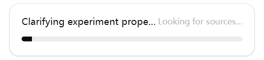

Deep Research：撰写文章综述 - Deep Research：Writing Review of Articles
我订阅了Openai的ChatGPT pro会员，使用其Deep Research（深度研究）功能，撰写了一篇有关近5年Molecular Dynamics（分子动力学）研究的学术综述。
I subscribed to OpenAI's ChatGPT Pro membership and used its Deep Research feature to write an academic review on Molecular Dynamics (MD) research over the past five years.
Deep Research简介 - What is Deep Research?
Deep Research是OpenAI在3天前发布的一项新功能，由最新的o3模型驱动，可以深入探究一个复杂主题，耗时10分钟甚至更久，生成一份专业的，详细的万字报告。
它与ChatGPT的对话模式不同，它是自主的，即，不需要用户的对话作为驱动，它会自动澄清问题，搜索网页，解释数据，并生成报告。即，它是一个AI agent。
只有ChatGPT Pro用户才可以使用。为此，我花了200USD。
Deep Research is a brand-new feature released by OpenAI three days ago. Powered by the latest o3 model, it can research deeply into complex topics, taking 10 minutes or more to generate a professional, in-depth report in thousands of words.
Unlike the standard ChatGPT conversational mode, Deep Research is autonomous. It doesn’t rely on user interaction to proceed—it clarifies questions on its own, searches the web, interprets data, and generates a comprehensive report. In essence, it's an AI agent.
It’s exclusive to ChatGPT Pro users, and I spent $200 USD to access it.
使用方法 - How to Use It
打开chatgpt网页，使用任意模型，点击输入框中的Deep Research按钮，然后输入你的要求，越详细越好，最后回车。
建议用英文与Deep Research agent对话，因为英文模式下o3模型效果更好，且英文资料更丰富。
Open the ChatGPT web app with any model selected, click the
Deep Research button in the input box, type in your request
(the more detailed, the better), and press Enter.
It's highly recommended to converse with the Deep Research agent in English, as the o3 model performs better in English and there’s a wealth of English literature available.
通常来说，在分析完你的输入之后，Deep Research会再问几个问题，以确定你的需求。之后它就会开始研究。当它研究时，屏幕中会出现带有进度条的按钮，点击它，可以查看当前的思考过程。
After analyzing your input, Deep Research usually asks a few follow-up questions to refine your request. Then it begins the research. While it’s working, you’ll see a button with a progress bar—clicking on it lets you view its current thought process.

注：有时Deep Research在问完问题后不能自动开始研究，这应该是bug。如果你迟迟没有看到按钮和进度条，可以点击输入框，输入“You suppose to invoke the deep research function” （你应当调用深度研究功能）。
Note: Sometimes, after asking questions, Deep Research doesn’t start automatically—likely a bug. If you don’t see the button or progress bar, click the input box and type: “You suppose to invoke the deep research function.”
结果评价 - Evaluation
Deep Research真的能生成一篇简易的学术综述，并给出所有的引用。我检查了其中的一些引用，它们确实是真实的链接，且忠实地保留了原文的主旨。这是个巨大进步，相比之下，ChatGPT的其他模型在生成引用时，总是会产生幻觉/错误引用。
但是它只能读取免费文献。对于需要订阅的期刊，也许只能手动上传文献。
Deep Research is genuinely capable of generating a solid academic review complete with citations. I verified several of them, and they are real links that accurately represent the source content. This is a significant improvement, as other ChatGPT models often hallucinate or misquote when generating citations.
However, it can only access open-access literature. For paywalled journal articles, you might need to upload them manually.
总之，Deep Research写综述的能力非常强，能帮助搞学术的人节约大量时间和精力。
In short, Deep Research excels at writing reviews, making it a valuable tool for academics by saving them significant time and effort.
完整的聊天记录 - Full Chat Transcript
本次对话的网页链接 - Click here to view the full chat
本次对话的中英双语的.mhtml文件，可以使用浏览器打开：
The bilingual .mhtml file of the conversation, which can be opened in a browser: